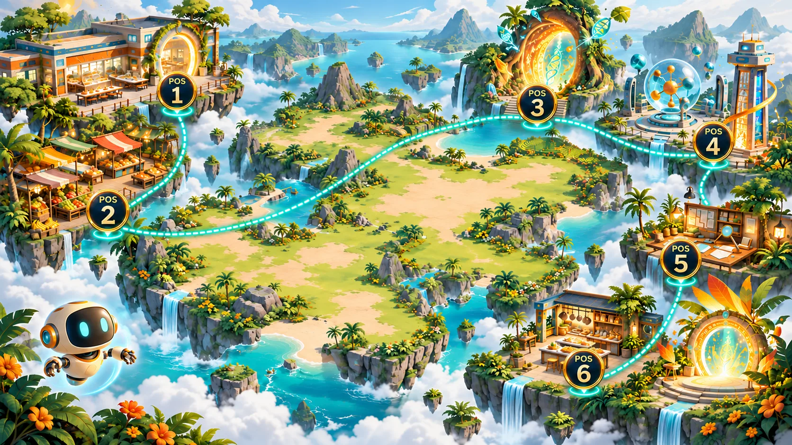

Dunia bersama.
Jelajahi pulau. Dekati portal pos atau Nara, lalu tekan E.
W A S D / ↑ ↓ ← → berjalan · E berinteraksi · klik/sentuh untuk berjalan · lebih nyaman dengan papan ketik? Gunakan .
Peta kepulauan.

Halo! Klik pos di peta untuk melihat misinya.
Detektif Menu.
Kesimpulanmu perlu didukung oleh data yang relevan.
REFLEKSI PASPOR · WAJIB DIISI
Jelaskan alasanmu dengan singkat.
Tidak ada nyawa yang hilang. Baca kembali bukti dan coba lagi.
Dapur Juara.
Rancang satu porsi menu pangan lokal untuk siswa SMA di lingkungan sekolah.
Pertimbangkan komposisi, porsi, dan fungsi zat gizi berdasarkan bukti. Gunakan bahan yang tersedia di sekitar sekolah, misalnya jagung, tempe, dan sayur lokal.
- Tetapkan sasaran dan waktu makan.
- Untuk setiap bahan, catat nama, bentuk (mentah atau olahan), berat bagian yang digunakan, dan sumber data.
- Ambil nilai gizi per 100 g dari Tabel Komposisi Pangan Indonesia atau label pangan.
- Kontribusi tiap bahan = nilai per 100 g × berat porsi (g) ÷ 100. Jumlahkan untuk memperoleh perkiraan per porsi.
- Jika nilai tidak tersedia, kosongkan kolomnya. Kolom itu akan ditandai belum tersedia, dan kamu perlu menjelaskan dampaknya pada simpulan.
Minta teman atau guru menelaah rancangan awalmu.
Apa yang kamu pelajari dari merancang menu berdasarkan bukti?
Paspor ekspedisi.
Rapor ekspedisi.
Papan peringkat.
Hanya ekspedisi yang selesai di peramban ini yang tercatat. Saat skor seri, catatan yang masuk lebih dahulu berada di atas.
Proyek menu sehat kantin.
Temani Nara menjalani enam langkah PjBL. POS 1–5 berisi 10 soal analisis yang dijawab individu lalu dikunci bersama kelompok; di POS 6 kelompok merancang prototype menu sehat harian kantin sekolah. Skor analisis terpisah dari skor rapor ekspedisi.
Prestasi penjelajah.
XP datang dari kegiatan belajarmu: menjawab Papan Laporan, menyegel pos, bintang mini-game, kepingan arsip, pulau jelajah, PjBL, dan event kelas Bos Mitos Gizi. Skor rapor (maks. 420) tidak berubah.
Toko busana.
Tukar poin hasil belajarmu dengan busana khas daerah di Nusantara. Belanja tidak mengurangi skor rapor dan papan peringkat. Busanamu terlihat oleh teman sekelas di dunia 3D. Kiosnya ada di Alun-alun Nusantara.
Pratinjau 3D tidak tersedia di mode 2D. Busana tetap bisa dibeli dan dipakai.